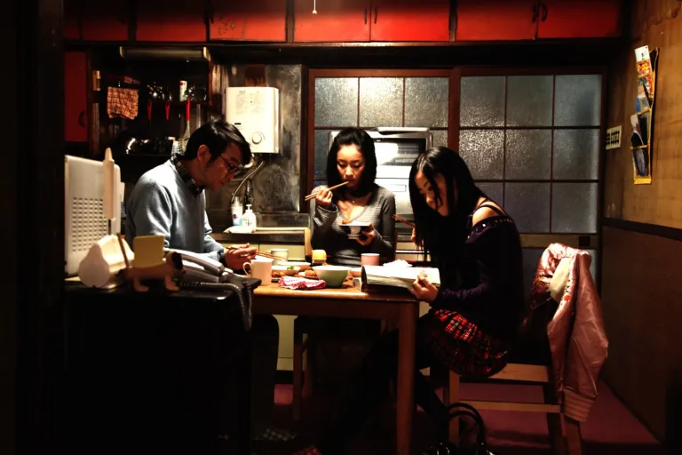
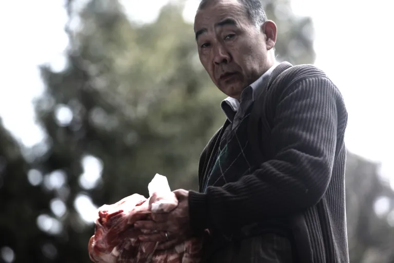

Không tiết lộ nút thắt
Tóm tắt cốt truyện
Con gái của Nobuyuki Syamoto bị bắt quả tang ăn cắp trong cửa hàng. Một người đàn ông hào phóng và duyên dáng tên Murata xuất hiện giúp cô thoát khỏi rắc rối, rồi từng bước len vào cuộc sống gia đình Syamoto.
Murata cũng kinh doanh cá cảnh và muốn hai người hợp tác. Nhưng sau vẻ ngoài lịch thiệp ấy là một bí mật chỉ chờ trồi lên mặt nước. Trước khi kịp hiểu chuyện gì đang xảy ra, Syamoto đã bị mắc kẹt trong một thế giới tăm tối hơn rất nhiều so với những gì ông từng tưởng tượng.

Nhân vật
Dàn diễn viên chính
- Mitsuru FukikoshiNobuyuki Syamoto — người đàn ông nhút nhát, chủ một cửa hàng cá cảnh nhỏ.
- DendenYukio Murata — một tay buôn cá cảnh khác, luôn tươi cười nhưng cất giấu bí mật kinh hoàng.
- Asuka KurosawaAiko Murata — người vợ thất thường và khó đoán của Yukio.
- Megumi KagurazakaTaeko Syamoto — người vợ trẻ của Nobuyuki.
- Hikari KajiwaraMitsuko Syamoto — cô con gái nổi loạn của Nobuyuki.
Cảm nhận
Một chuyến đi hoang dại
Cold Fish có thể được tóm gọn bằng một câu: đây là một chuyến đi cực kỳ hoang dại. Hai mươi phút mở đầu gieo vài kỳ vọng mơ hồ, từ tốn đưa ta vào thế giới của phim và giới thiệu các nhân vật. Nhưng đâu đó quanh phút bốn mươi, mọi thứ bị lật nhào. Từ khoảnh khắc đó, phim lao xuống con đường riêng — độc đáo, u tối và ngày càng khó chịu.
Syamoto là hình mẫu của một người đàn ông bình thường: kín đáo, lễ phép, sở hữu cửa hàng cá nhiệt đới nhỏ và sống trong một gia đình đầy trục trặc. Con gái ông căm ghét người mẹ kế trẻ tuổi, thậm chí có hành vi bạo lực, còn ông chỉ cúi đầu và giả vờ không nhìn thấy. Cuộc đời còn lâu mới hoàn hảo, nhưng Syamoto dường như không muốn làm gì để thay đổi nó.
Sau vụ ăn cắp, Murata mời Mitsuko đến làm tại cửa hàng cá lớn hơn nhiều của mình. Ban đầu, hắn hiện ra như một quý ông Nhật Bản mẫu mực: cư xử đúng mực, nhiệt tình và hào phóng đến dư thừa. Denden biến nụ cười của Murata thành thứ vũ khí đáng sợ nhất phim — nó vừa thân thiện, vừa báo trước một điều gì đó hoàn toàn sai lệch.
Ngôn ngữ điện ảnh
Máy quay không ngoảnh mặt
Phần hình ảnh mang dấu ấn Sion Sono rất rõ: tinh tế, tiết chế và thường giữ nhân vật ở trung tâm khung hình. Máy quay trôi tự nhiên; khi một cú máy dài đủ sức ghi lại toàn bộ phản ứng, ông không cắt vụn nó thành nhiều góc vô nghĩa. Thi thoảng, góc nhìn chủ quan còn đặt khán giả gần như trực tiếp vào vị trí của Syamoto.
Ngược lại, phim không né tránh sự tàn bạo của Murata hay những hành vi tình dục. Người xem bị kéo qua từng bước trong quy trình “xóa dấu vết”, từ khoảnh khắc gây án cho đến khi phần tro cuối cùng bị rải đi. Sự chi tiết ấy khiến ta hiểu vì sao Murata có thể thoát tội, đồng thời buộc ta cảm nhận trọn vẹn nỗi sợ của Syamoto.
Thế nhưng chính thái độ co rúm trước mọi việc cũng bóc trần Syamoto như một người yếu đuối, không thể đứng lên cho bản thân chứ chưa nói đến gia đình. Đến cuối phim, con người luôn cúi đầu, nhỏ nhẹ ấy gần như không còn nhận ra được nữa.

Chủ đề
Bạo lực bị kìm nén
Ở nhiều góc độ, Cold Fish là cuộc mổ xẻ ham muốn bạo lực và tình dục bị dồn nén trong xã hội Nhật Bản. Nhu cầu hành động vốn đã tồn tại trong Syamoto, nhưng ông chôn nó quá sâu. Khi phần bóng tối ấy cuối cùng sôi trào, nó không còn điểm dừng và cũng không hề có lòng thương xót.
Sion Sono không kể một câu chuyện giật gân đơn giản nơi người tốt thắng hoặc thua. Ông dùng các nhân vật để soi vào bạo lực, quyền lực, tình dục và hình mẫu “gia đình” bằng một ánh mắt phê phán. Vì vậy, cảm giác mà phim để lại không chỉ là ghê sợ; đó còn là nỗi buồn khi thấy sự im lặng và né tránh có thể nuôi lớn thảm họa.
Đánh giá không spoil
Có nên xem?
Rất nên xem nếu bạn yêu điện ảnh Nhật hoặc phim kinh dị tâm lý / giật gân. Mức độ máu me khá cao và được mô tả chi tiết, nhưng không chỉ tồn tại để gây sốc; nó luôn phục vụ cho câu chuyện. Diễn xuất đồng đều xuất sắc, đặc biệt là hai nam chính. Hình ảnh đẹp — nhất là các cảnh núi Phú Sĩ — còn phần nhạc thì lúc căng thẳng, lúc cố tình lệch tông đầy châm biếm, như thứ nhạc surf vui vẻ cứ vang trong cửa hàng của Murata.
Cảnh báo: phần dưới tiết lộ chi tiết đoạn kếtNhấn để mở phân tích có spoil ＋
AJ’s verdict / Có spoil
Một cái kết không cho phép giải thoát
Phần lớn thời lượng 2 giờ 25 phút là một trải nghiệm khó chịu có chủ đích. Việc Syamoto cam chịu bị chèn ép và bất lực trước đời sống riêng khiến người xem phát bực; tính kiểm soát cùng những cơn bùng nổ loạn thần của Murata thì duy trì cảm giác lo âu liên tục. Dù dài, phim không hề cho cảm giác gần hai tiếng rưỡi. Nhịp độ và thời lượng cùng giúp khán giả chứng kiến đủ bề rộng của những kinh hoàng mà Syamoto chịu đựng, để cú gãy của ông trở nên vừa thuyết phục vừa gây sốc.
Sau khi bị ép quan hệ với Aiko ngay sau một lần dọn xác, cộng với màn đối đầu nơi Murata phơi bày sự nhu nhược mà cả thế giới nhìn thấy ở ông, Syamoto cuối cùng cũng vùng lên. Việc biết Murata từng quyến rũ vợ mình càng đẩy ông đến quyết định trả thù. Đây thường là khoảnh khắc khán giả thầm reo lên vì người hùng cuối cùng đã giành lại cuộc đời — nhưng bộ phim không trao sự thỏa mãn ấy.
Sono đưa câu chuyện đến tận cùng của chủ nghĩa hư vô. Quyết định hành động của Syamoto chỉ sinh ra tàn bạo, tan vỡ và chết chóc. Ông cưỡng hiếp vợ, đánh con gái bất tỉnh rồi đâm vợ khi cô muốn làm hòa. Sau câu nói “Cuộc sống là đau khổ”, ông tự sát và để Mitsuko gào thét trước thi thể mình. Câu nói ấy cho thấy Syamoto chưa từng hạnh phúc; phần bạo lực luôn ở đó, chờ ngày thoát ra. Việc từ chối thừa nhận mặt tối cuối cùng hủy diệt ông, vợ ông và có lẽ cả con gái ông về sau.
Ban đầu, sự xấu xa không ngừng và cách phim hành hạ nhân vật chính có thể khiến ta tự hỏi liệu mình có thực sự thích bộ phim hay không. Nhưng nửa giờ cuối hoàn tất luận điểm: hành trình của Syamoto thuyết phục hơn nhiều so với một cái kết nơi ông chỉ giết Murata rồi cứu được tất cả. Phim chọn cuộc mổ xẻ khắc nghiệt về bạo lực và tình dục thay cho sự dễ chịu của một chiến thắng.
Nick’s verdict / Có spoil
Một kiểu “trưởng thành” méo mó
Sono từng nói rằng phim Nhật chưa đủ tuyệt vọng; giờ thì ta hiểu vì sao ông làm Cold Fish theo cách này. Sự vô vọng phủ lên mạng lưới câu chuyện, còn tính khó đoán của Murata và Aiko khiến người xem không bao giờ biết thử thách kế tiếp dành cho Syamoto sẽ tàn nhẫn đến mức nào. Đến đoạn cuối căng thẳng, nỗi lo âu chuyển thành trạng thái không thể rời mắt khỏi bi kịch đang diễn ra.
Theo một nghĩa nào đó, đây có thể được xem như một bộ phim “trưởng thành”. Syamoto phải thoát khỏi con người yếu đuối để đối mặt sự thật khắc nghiệt của cuộc đời, nhưng sự trưởng thành ấy bị bạo lực bẻ cong. Phim đồng thời lặp lại chủ đề cha mẹ và con cái: Syamoto với Mitsuko, Murata với người cha từng bạo hành hắn, và vài gợi ý về cha của Aiko. Trong cuộc đối đầu cuối, Murata liên tục đòi Syamoto xem mình như một người cha — kẻ chịu trách nhiệm cho sự thay đổi từ yếu sang mạnh.
Một bộ phim cũng có thể được xem là đứa con của đạo diễn: được nuôi từ tiền kỳ đến hậu kỳ bằng thời gian và năng lượng. Câu “Cuộc sống là đau khổ” khiến người ta nhớ đến lời Sono từng nói về quá trình làm Love Exposure: “Mỗi ngày đều là chịu đựng.” Có lẽ chính trải nghiệm trong mối quan hệ kiểu cha mẹ — đứa con ấy đã góp phần tạo nên những ý tưởng của Cold Fish.